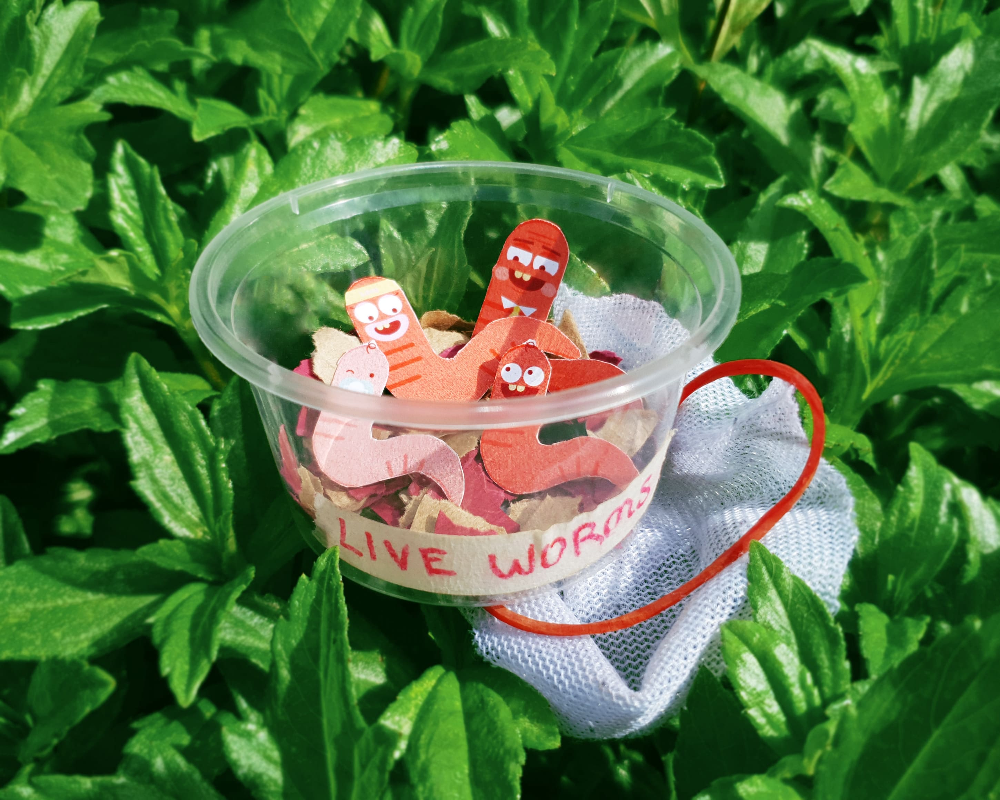

Underrated Trash Snackers
Crowbar Awards 2021


The Underrated Trash Snackers is campaign aimed to make food wastage reduction a fun, interesting and educational approach for people of varying ages to implement into their daily lives.
Case Film
Campaign Board

Activation: Vermicomposting Starter Kit
Given to community gardeners, school students to try vermicomposting for themselves.




Adopt A Trash Snacker! Posters
Placed at community gardens and school canteens to break stereotypes of worms, urge users to go to the TrashSnackers website to find out more through the QR code.


TrashSnackers Website
Users can check out brands’s vision and upcoming workshops. Companies and schools are also encouraged to collaborate with us to inculcate vermicomposting habits into their workplace. CTA to TrashSnackers App.

TrashSnackers App
Users can download to join a community of vermicomposters where they give and take composting materials.

TrashSnackers Instagram (social media)
Reach more people while bringing the community closer. Tips, stories and future events are posted here.

Telegram Stickers
Users can use Squiggles in their daily conversatiions and send them to their loved ones.